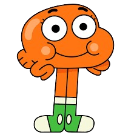
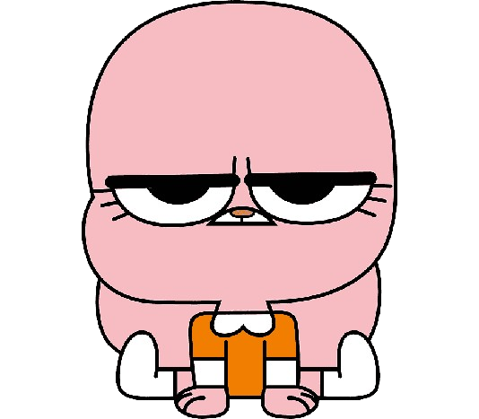
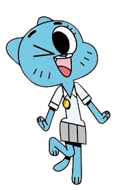
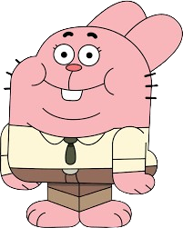

Gumball is the main character of the
series. He is known for being cheerful,
full of energy, and often gets into trouble
due to his impulsive and creative nature.
Even though he often does silly things,
Gumball cares deeply about
his family and friends.

Darwin is Gumball's best friend and
adoptive brother. He was
originally the family pet who grew
legs and became a family member.
Darwin is a very sweet, innocent,
and kind-hearted character.
He often serves as the voice
of reason among Gumball
and his friends.
Anais is the younger sister of
Gumball and Darwin. Despite being
the youngest, Anais is the most
intelligent member of the family. She
often feels frustrated because
her intelligence is not appreciated
by her older, more immature brothers.


Nicole is the mother of Gumball, Darwin,
and Anais. She is a hardworking, strict
character who often has to be the
organizer and mediator in the chaotic
Watterson household. Although she
loves her family deeply, Nicole
sometimes feels frustrated with
having to manage her husband
and children's antics.
Richard is the father of Gumball,
Darwin, and Anais. He is extremely lazy,
loves to eat, and is rather childish.
Richard often relies on Nicole to
handle everything, although
he loves his family very much.
He has a laid-back approach to life
and often causes problems
due to his laziness.
